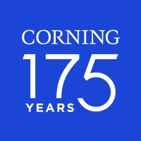
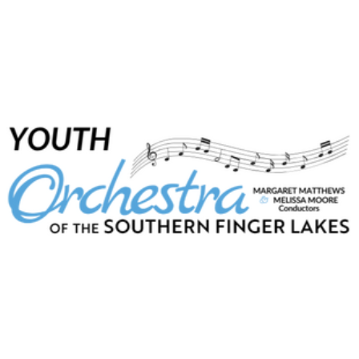
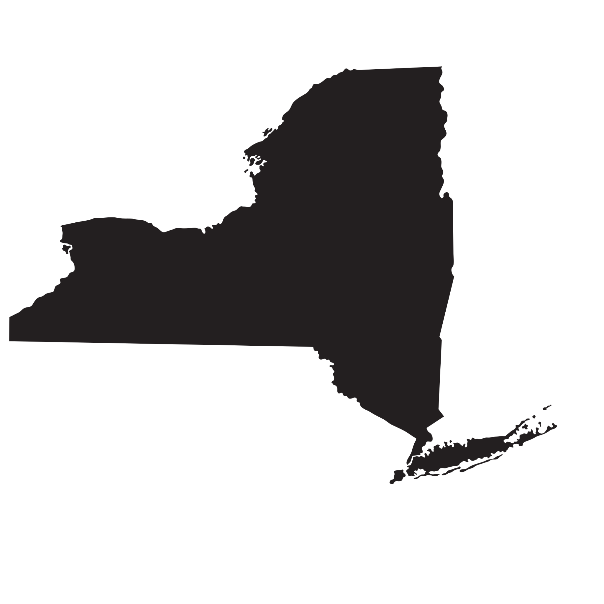
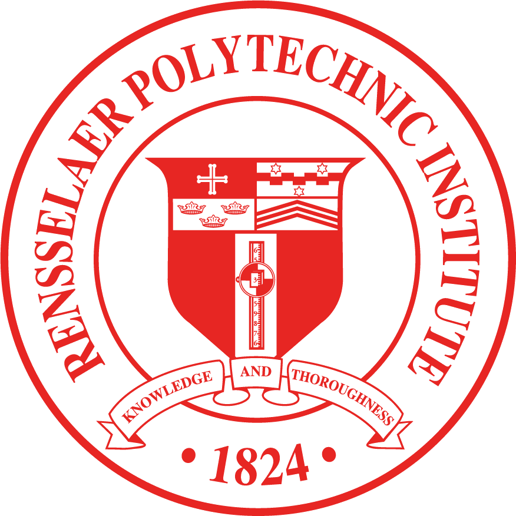
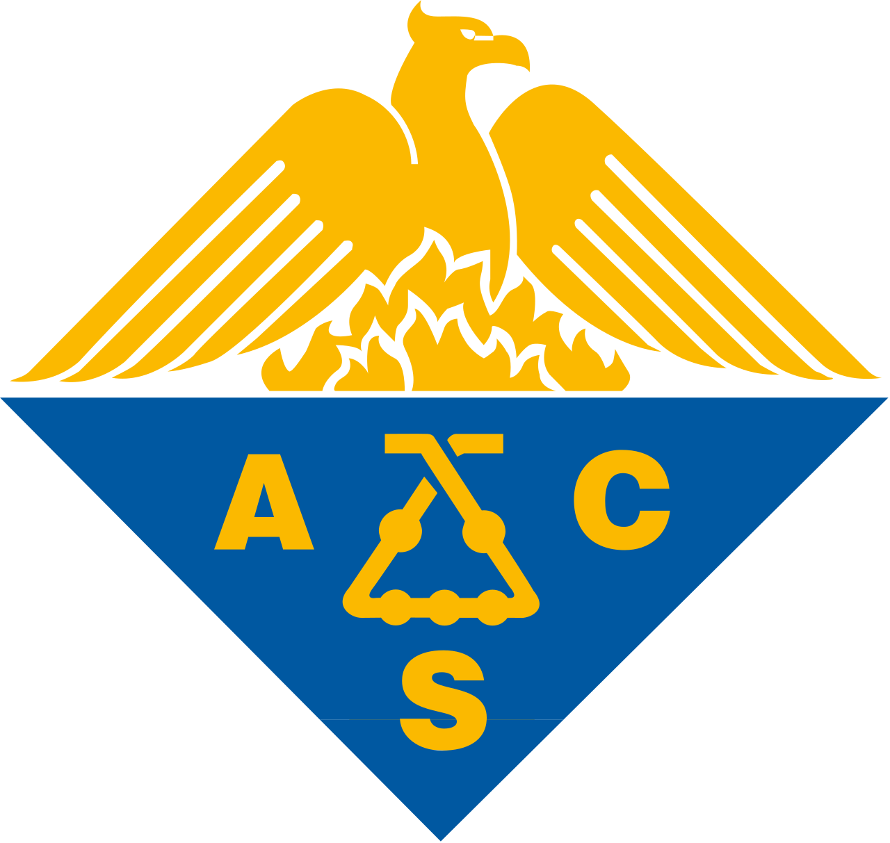
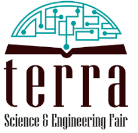

Derek Guo
Note
Thank you so much again for taking the time and effort to write a letter of recommendation for me!
I know that this is an exhaustive list and that it would of course be unfeasible to include all or more than a few of the items on it in a letter.
Hopefully, it simply provides some information about my experiences beyond the classroom. Many of the items described below will also appear elsewhere in my application, so I imagine they are most meaningful when included merely to support or provide context for the personal observations and anecdotes you have gained from teaching and interacting with me directly.
Additionally, my intended major is Electrical/Computer Engineering, and my top choice universities include Stanford University, UC Berkeley, MIT, Princeton University, and Carnegie Mellon University (although I will apply to numerous other universities too).
Thank you again,
Derek
Highlighted Extracurriculars

Soft Matter Physics Researcher at the University at Buffalo
- Working with Professor Xin Yong's SaIL Lab, using computational models to study the effects of periodic deformation of a polymer network on the diffusion of a nanoparticle.
- Developing novel methods and algorithms to investigate under-studied phenomenon mediating nanoparticle transport, including transient, localized pore fluctuations.
- Working with the Python programming language and LAMMPS to run and analyze simulations.
- Writing a manuscript with the goals of an arXiv pre-print and a peer-reviewed journal publication.

Optomechanics Intern with Corning Incorporated
- Designed a custom integrating sphere for a novel optical instrument using SOLIDWORKS, seeing it through from idea to manufactured final product.
- Created a signal analysis algorithm in Python to be paired with this integrating sphere.
- Presented findings at Corning's Summer Science Research Symposium.
Nuclear Energy Reform Advocate
- Leading a small group of peers to advance an original, novel state policy change regarding spent nuclear fuel recycling.
- Met with 12 state legislators and policy analysts to propose and discuss our proposal, as well as Governor Hochul's Deputy Secretary for Energy; further meetings in the works!
- Attended (and volunteered 5.5 hours at) the 2026 Nuclear Symposium to gain further insights into our proposal; worked with Assemblyman Scott Gray's team to collect important notes/information.

Corning-Painted Post High School Physics Club
Founder & President
- Planned and led interactive meetings and events to increase students' understanding and appreciation of physics and its applications.
- Initiated a long-term, hands-on project with the goal of building a working 4-bit CPU from scratch with thousands of electrical components.
- Initiated and coordinated the first annual lab visit in November 2025, with 18 students visiting four cutting-edge quantum computing labs at the University of Rochester (we're looking to do another trip to a different lab this year too).
- Helped students learn about electrical circuit basics in a hands-on manner by using Arduino sets.
- Planned and carried out a model rocket launch in May 2026 that allowed students to experience physics principles in a fun, hands-on way.
Notable events:

Youth Orchestra of the Southern Finger Lakes
Concertmaster
- Performed in 3+ public concerts annually, including a side-by-side with the professional Orchestra of the Southern Finger Lakes.
- Led the first violin section as well as guiding the entire orchestra in deciding bowings, interpretation, providing supplementary cues, etc.
NYSSMA All-State String Orchestra
First Violin
- Selected among a vast applicant pool as one of the top student violinists in the extremely competitive state of New York—was the only string player from a 5-county region to be selected for any All-State ensemble.
- Performed live at the world-renowned Eastman School of Music under the baton of acclaimed cellist Anthony Elliott, a Professor Emeritus of Music at the University of Michigan.
CPPHS Varsity Tennis
Co-Captain
- Helping to lead a team of 26, many of which are newcomers, to find a balance between fun and discipline while fostering growth and team unity.
- Placed third in Section IV Class A singles in 2025, qualifying for NYSPHSAA State Qualifiers, and fourth in 2026.
CPPHS Varsity Swimming/Southern Tier Aquatics Club Swimming
- Contributed significantly to multiple successful Varsity seasons by scoring 95 points since joining in 8th grade and helping win the 2023, 2025, and 2026 Section IV Class A team championships.
- Instructed children in swimming techniques with Southern Tier Aquatics's Stroke School.
NYSSMA Zone 15 Area All-State String Orchestra
Concertmaster
- Selected for this honors ensemble in a competitive process as Concertmaster, the top student violist among several counties in New York State.

Upstate New York ARML Team
"Team Manifold" Captain
- Led a team of some of the top math competitors from all over Upstate New York to compete at one of the largest and most competitive secondary school mathematics competitions in the United States.
Education
Corning-Painted Post High School
- Rank 2/328, score 5 on 9 AP exams, 1580 SAT
AP Exams
AP Calculus BC
AP Physics C: Electricity & Magnetism (2027, self-study)
AP Physics C: Mechanics
AP Computer Science A (self-study)
AP Physics 1 (self-study)
AP Physics 2 (self-study)
AP Statistics
AP World History (self-study)
AP Chinese (self-study)
AP United States History (self-study)
AP English Language and Composition (2027, self-study)
University of North Dakota
Introduction to Linear Algebra (currently taking online for credit)
Calculus III (will start later in the year, online for credit)
Awards
National Merit Scholarship Semifinalist
Issued by the National Merit Scholarship Corporation
- One of about 16,000 high schoolers in the nation selected from PSAT/NMSQT performance.
- Currently in application process for Finalist status.

Rensselaer Medal
Issued by the Rensselaer Polytechnic Institute
- Recognized as a top math and science high school junior with outstanding achievement in STEM.

(2x) U.S. National Chemistry Olympiad (USNCO) National Exam Qualifier
Issued by the American Chemical Society
- Among just ~1,000 students nationwide to advance to the national exam in one of the most prominent chemistry competitions in the United States.

Bobbi Alcock Founders Award in Chemistry
Issued by Terra Science and Education
- Awarded for the best project in chemistry at TRFSEF, a competitive ISEF-affiliated science fair, for a project studying a novel area of nanoparticle diffusion dynamics.
W. Varick Nevins III Math Competition Senior Division Co-Champion
Issued by Alfred University
- Highest-scoring upperclassman (two-way tie) out of roughly 100 competitors from western NY, winning a monetary prize.
W. Varick Nevins III Math Competition Sophomore Division Champion
Issued by Alfred University
- Highest-scoring underclassman out of roughly 100 competitors from western NY, winning a monetary prize.
Other Extracurriculars
Volunteering
- Volunteered at CMoG, food pantries, the 2026 Nuclear Symposium, the Wineglass Marathon, as well as other events and locations for 80+ hours over high school.
Formal Summer Programs
- 11-12th grade: Summer Science Research Experience (internship) with Corning Inc., 7 weeks (mentioned above)
- 10-11th grade: Brown Pre-College, 3 weeks: took a calculus-based soft matter physics course; also did work on topology optimization with M.S. student Karol Roman
- 9-10th grade: Exeter Summer, 5 weeks: took classes in writing, psychology, and debate
- 8-9th grade: CTY on-site, 3 weeks: took a computer science course
Some Other Activities
- Worked with Professor Jifu Tan of Binghamton University in 10th grade to create an app analyzing users' basketball shots and suggesting improvements
- Accompanied CPPHS Choristers in 10th grade, and subsequently accompanying the Hallelujah Chorus every December.
- National Honor Society
- Played violin in the pit orchestra for The Sound of Music in 9th grade
- Math Club, Coding Club, Piano Club
- One of a few students selected from CPPHS to attend the HOBY Leadership Conference in 10th grade